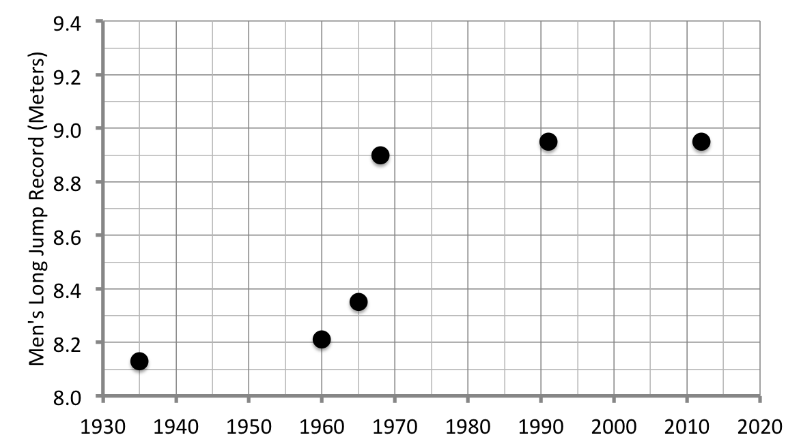

Try taking this version of the practice exam under testing conditions: no book, no notes, no classmate’s help, no electronics (computer, cell phone, television). Give yourself one hour to work and wait until you have tried your best on all of the problems before checking any answers.
1.
The Vang family wants to buy a new washing machine. The first model costs $645 and then $13.29 per month to run. A more efficient model costs $940 and then $7.82 per month to run. If \(T\) is the time in months and \(V\) is the Vang family’s total cost (in $), then the equations and some comparable values (to the nearest $) are:
First model:
\(V = 645 + 13.29T\)
Second model:
\(V = 940 + 7.82T\)
\(T\)
12
36
60
First model:
804.48
1,123.44
1,442.40
Second model:
1,033.84
1,221.52
1,409.20
(a)
Draw a graph illustrating both equations. Be sure to include the intercepts.
(b)
According to your graph, approximately what is the payback time (the number of months for which the total costs of each washing machine are equal)? Answer and indicate the point on the graph where you can check.
(c)
Set up and solve a system of linear equations to find the payback time exactly.
(d)
If the manufacturer offers a $25 rebate on the more efficient model, how does that change the payback time? Adjust your equation and set up and solve a new system. Or carefully explain some other way of figuring it out.
2.
It has been a long time since anyone broke the record for the men’s long jump. In 1935 Jesse Owens jumped 8.13 meters. The record was next broken 25 years later, in 1960, by Ralph Boston who jumped 8.21 meters. He broke his own record several times over the next few years, including being surpassed briefly by Igor Ter-Ovanesyan. Ralph’s final record was 8.35 meters in 1965. Not to be outdone, Igor tied the record in 1967. Then in 1968, Bob Beamon jumped 8.90 meters. That record held for 23 years, until Mike Powell jumped 8.95 meters in 1991, much to Carl Lewis’ dismay. Powell’s record still stood 21 years later, in 2012. 1
Source: Wikipedia (Long Jump)

(a)
Draw in the line connecting the data from 1935 and 1991. Use it to predict the long jump record in 2020.
(b)
Draw in the line connecting the data from 1968 and 1991. Use it to predict the long jump record in 2020.
(c)
Which of your lines do you prefer, and why?
3.
Arjun just graduated from college but is living with his uncle for the summer to save money. They agreed that Arjun would do chores and some light renovations instead of paying rent. Arjun has been doing around 5 hours of work a week for the past 8 weeks, but still owes his uncle another 30 hours of work.
(a)
What was the original agreement? That means, how many hours of work did Arjun originally promise his uncle?
(b)
Name the variables and write an equation relating them, assuming Arjun continues to do 5 hours a week of work.
(c)
How many more weeks will it take Arjun to finish the work he promised? Show how to solve the equation.
4.
The local zoning commission is considering a plan to expand housing in the city, as measured in the number of residential units. But with more residential units come more shops, offices, schools, recreational facilities, churches, and other commercial property. Currently the city has 3,500 residential units and 1,575 acres of commercial property. If the proposal is passed and completed, the city will have a new total of 3,600 residential units and 1,620 acres of commercial property. You can assume this increase is linear.
(a)
Name the variables and summarize the given information in a table.
(b)
How many new acres of commercial property are there for each new residential unit built?
(c)
Write an equation relating the variables. Hint: first find the intercept.
(d)
If the city decides to limit the amount of land to 1,600 acres of commercial property, approximately how many residential units can there be? Use successive approximation, displaying your guesses in a table.
(e)
Now answer the question exactly by setting up and solving an inequality.